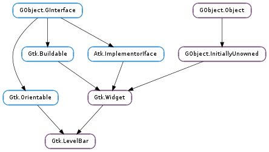

| static | new() |
| static | new_for_interval(min_value, max_value) |
| add_offset_value(name, value) | |
| get_inverted() | |
| get_max_value() | |
| get_min_value() | |
| get_mode() | |
| get_offset_value(name) | |
| get_value() | |
| remove_offset_value(name) | |
| set_inverted(inverted) | |
| set_max_value(value) | |
| set_min_value(value) | |
| set_mode(mode) | |
| set_value(value) |
| Name | Type | Flags | Description |
|---|---|---|---|
| inverted | bool | r/w | Invert the direction in which the level bar grows |
| max-value | float | r/w | Maximum value level that can be displayed by the bar |
| min-value | float | r/w | Minimum value level that can be displayed by the bar |
| mode | Gtk.LevelBarMode | r/w | The mode of the value indicator displayed by the bar |
| value | float | r/w | Currently filled value level of the level bar |
| Name | Parameters | Return | Description |
|---|---|---|---|
| offset-changed | str | Emitted when an offset specified on the bar changes value as an effect to Gtk.LevelBar.add_offset_value () being called. The signal supports detailed connections; you can connect to the detailed signal “changed::x” in order to only receive callbacks when the value of offset “x” changes. |
| Name | Type | Access |
|---|---|---|
| parent | Gtk.Widget | r |
Bases: Gtk.Widget, Gtk.Orientable
The Gtk.LevelBar is a bar widget that can be used as a level indicator. Typical use cases are displaying the strength of a password, or showing the charge level of a battery.
Use Gtk.LevelBar.set_value () to set the current value, and Gtk.LevelBar.add_offset_value () to set the value offsets at which the bar will be considered in a different state. GTK will add two offsets by default on the level bar: Gtk.LEVEL_BAR_OFFSET_LOW and Gtk.LEVEL_BAR_OFFSET_HIGH, with values 0.25 and 0.75 respectively.
Adding a custom offset on the bar
static GtkWidget *
create_level_bar (void)
{
GtkWidget *level_bar;
level_bar = gtk_level_bar_new ();
/* This changes the value of the default low offset */
gtk_level_bar_add_offset_value (GTK_LEVEL_BAR (level_bar),
GTK_LEVEL_BAR_OFFSET_LOW, 0.10);
/* This adds a new offset to the bar; the application will
* be able to change its color by using the following selector,
* either by adding it to its CSS file or using
* gtk_css_provider_load_from_data() and gtk_style_context_add_provider()
*
* .level-bar.fill-block.level-my-offset {
* background-color: green;
* border-style: solid;
* border-color: black;
* border-style: 1px;
* }
*/
gtk_level_bar_add_offset_value (GTK_LEVEL_BAR (level_bar),
"my-offset", 0.60);
return level_bar;
}
The default interval of values is between zero and one, but it’s possible to modify the interval using Gtk.LevelBar.set_min_value () and Gtk.LevelBar.set_max_value (). The value will be always drawn in proportion to the admissible interval, i.e. a value of 15 with a specified interval between 10 and 20 is equivalent to a value of 0.5 with an interval between 0 and 1. When Gtk.LevelBarMode.DISCRETE is used, the bar level is rendered as a finite and number of separated blocks instead of a single one. The number of blocks that will be rendered is equal to the number of units specified by the admissible interval. For instance, to build a bar rendered with five blocks, it’s sufficient to set the minimum value to 0 and the maximum value to 5 after changing the indicator mode to discrete.
| Returns: | a Gtk.LevelBar. |
|---|---|
| Return type: | Gtk.Widget |
Creates a new Gtk.LevelBar.
| Parameters: |
|
|---|---|
| Returns: | |
| Return type: |
Utility constructor that creates a new Gtk.LevelBar for the specified interval.
| Parameters: |
|
|---|
Adds a new offset marker on self at the position specified by value. When the bar value is in the interval topped by value (or between value and Gtk.LevelBar :max-value in case the offset is the last one on the bar) a style class named ``level-``name will be applied when rendering the level bar fill. If another offset marker named name exists, its value will be replaced by value.
| Returns: | True if the level bar is inverted |
|---|---|
| Return type: | bool |
Return the value of the Gtk.LevelBar :inverted property.
| Returns: | a positive value |
|---|---|
| Return type: | float |
Returns the value of the Gtk.LevelBar :max-value property.
| Returns: | a positive value |
|---|---|
| Return type: | float |
Returns the value of the Gtk.LevelBar :min-value property.
| Returns: | a Gtk.LevelBarMode |
|---|---|
| Return type: | Gtk.LevelBarMode |
Returns the value of the Gtk.LevelBar :mode property.
| Parameters: | name (str or None) – the name of an offset in the bar |
|---|---|
| Returns: | True if the specified offset is found |
| Return type: | bool, value: float |
Fetches the value specified for the offset marker name in self, returning True in case an offset named name was found.
| Returns: | a value in the interval between Gtk.LevelBar :min-value and Gtk.LevelBar :max-value |
|---|---|
| Return type: | float |
Returns the value of the Gtk.LevelBar :value property.
| Parameters: | name (str or None) – the name of an offset in the bar |
|---|
Removes an offset marker previously added with Gtk.LevelBar.add_offset_value ().
| Parameters: | inverted (bool) – True to invert the level bar |
|---|
Sets the value of the Gtk.LevelBar :inverted property.
| Parameters: | value (float) – a positive value |
|---|
Sets the value of the Gtk.LevelBar :max-value property.
| Parameters: | value (float) – a positive value |
|---|
Sets the value of the Gtk.LevelBar :min-value property.
| Parameters: | mode (Gtk.LevelBarMode) – a Gtk.LevelBarMode |
|---|
Sets the value of the Gtk.LevelBar :mode property.
| Parameters: | value (float) – a value in the interval between Gtk.LevelBar :min-value and Gtk.LevelBar :max-value |
|---|
Sets the value of the Gtk.LevelBar :value property.